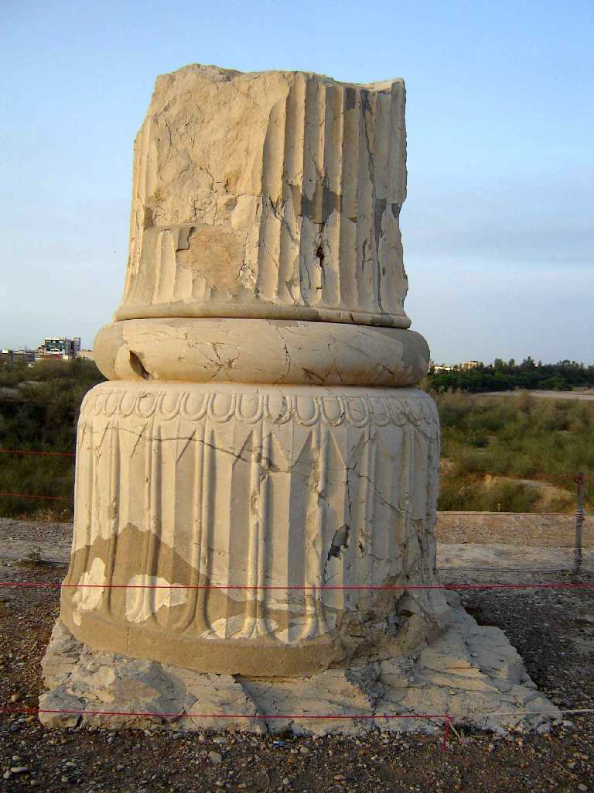
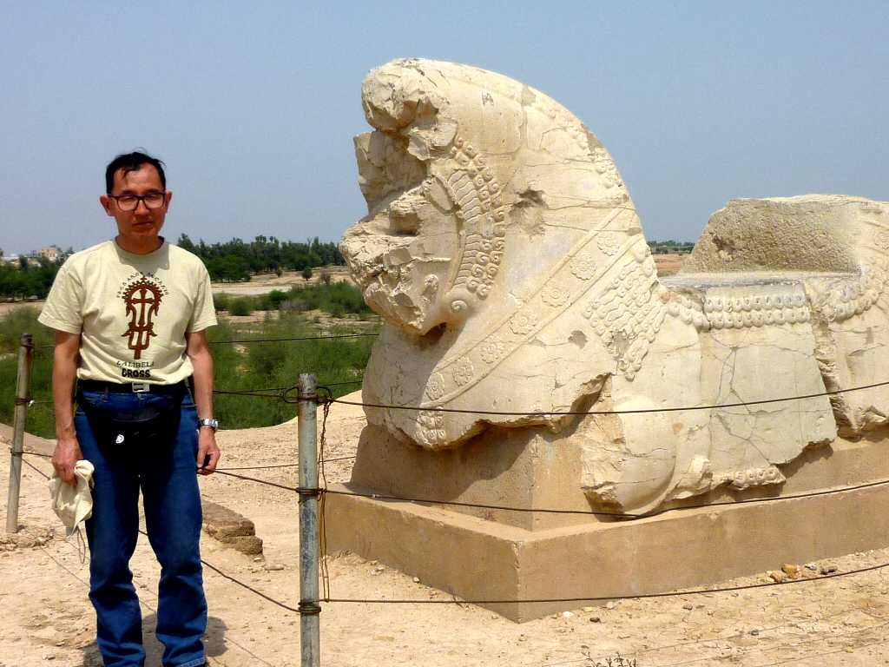

Apadana Palace in Susa
紀元前４０００年にはアクロポリスが存在し紀元前３０世紀から紀元前７世紀にはエラム王国の首都として栄えた さらに紀元前６世紀にアケメネス朝ペルシャ帝国のダリュウスにより冬の宮殿としてアパダナ宮が創建され王の道の基点として栄えた

April 16 2010 Apadana Palace in Shush
１９０１年閃緑岩に刻まれたハムラビ法典が発見された地として知られルーブル美術館にある Law Codex of Hammurabi